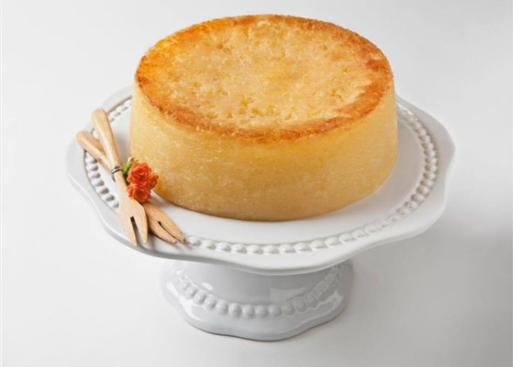

Bolo Souza Leão
R$ ***
Sobre o prato
O bolo Souza Leão foi servido ao imperador Dom Pedro II durante uma visita a Pernambuco e é geralmente creditado a Dona Rita de Cássia Souza Leão Bezerra Cavalcanti, de família dona de engenhos de açúcar. A grande inovação da receita foi a substituição de ingredientes como trigo pela massa de mandioca.